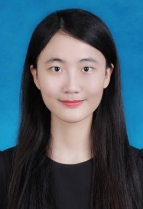

Rui Zhang（张睿） |
Climate change is real! |
|
|
|  |
|
Rui Zhang is currently a first year MSc student in Environmental Systems and Policy @ETH Zurich. She completed his bachelor'degree in Environmental Science @Tongji University in 2018 with a minor study in International Trade @Fudan University. Besides the study of professional knowledge, she also has an intense interest in studing programming language (familiar with Python), German language (A1) and playing the piano.
Interest Direction: Environmental Systems and Policy
Apr.2018 - Aug.2018, @Kohler Kitchen & Bath, EHS Intern.
——Assisted EHS (Environment, Health and Safety) team on EHS training package development, including the collection of training materials and the designing of training slides/ posts/ notice boards.
——Participated in monthly EHS worksite walkthroughs and safety observations. Analyzed EHS lagging indicators and regularly communicated with front-line employees to track the risk removing/ reducing processes.
——Tracked compliance with national, ISO and OSHA standards and updated the EHS management programs.
——Assisted in organizing EHS activities in Shanghai Kohler Electronics Ltd., such as Office EHS promotion, Stretching Exercises, Old Clothes Recycling, etc.
Feb.2017 - Apr.2018, @MyH2O China Water Information Network, Operation Intern.
——Responsible for communication with five university volunteer teams. Conducted pre-line communication and project follow-up, collecting feedback from volunteers during the activity to ensure smooth operations.
——Provided technical help on environmental monitoring, including modifying water monitoring guidelines for volunteers, producing online video training course and auditing environmental investigation reports.
——Assisted in compiling course materials for environmental education in rural elementary schools.
Sep.2015-May.2017, Shanghai Undergraduates' Innovation Training Program. Research on the distribution characteristics and formation mechanism of iodinated disinfection by-products in waters with different nutritional levels in the Yangtze River Delta. Co-authored two papers.
Apr.2017-Apr.2018, Tongji University Student Innovation Training Program (Team leader). Research on Shanghai heat island effect based on remote sensing and geographic information system.
Oct.2017, Japan-Asia Youth Exchange program in Science, Nagoya University. Full scholarship.
Jul.-Aug.2017, Summer School of Engineering & Science in Technion, Israel. Full scholarship.
Jun.-Aug.2016, Leader of Summer Social Practice team. Responsible for monitoring drinking water and investigating garbage disposal methods in 6 remote villages in Jiangxi Province.
Sep.2015-Jun.2016, Student assistant of the Foreign Student Office of Tongji University. Assisted in the administrative affairs, including registration, classification of documents, Q & A, etc.
Aug.2015, Volunteer of Jeunesse et Reconstruction. Helped reconstruct a monastery in Lyon, France.
2018, Excellent Graduate of Tongji University
2016, The First Prize of Tongji Scholarship of Excellence
2015&2017, The Second Prize of Tongji Scholarship of Excellence
2015, Second Award in Shanghai Final of English Writing Contest
2015, Outstanding team of Summer Social Practice of Tongji University
2015, Third Prize in Mathematical Modelling Competition at Tongji Univ.
Last updated by Rui Zhang, February 2019.